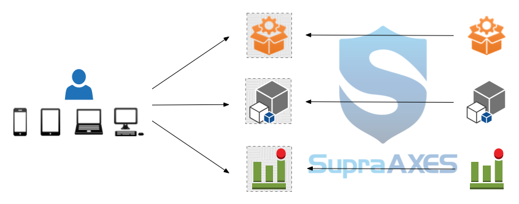
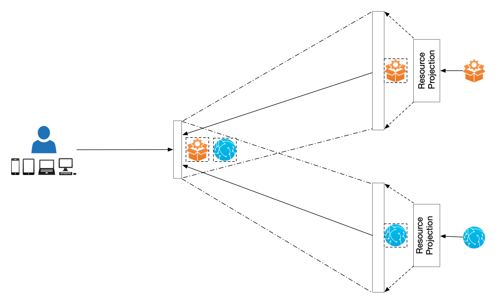
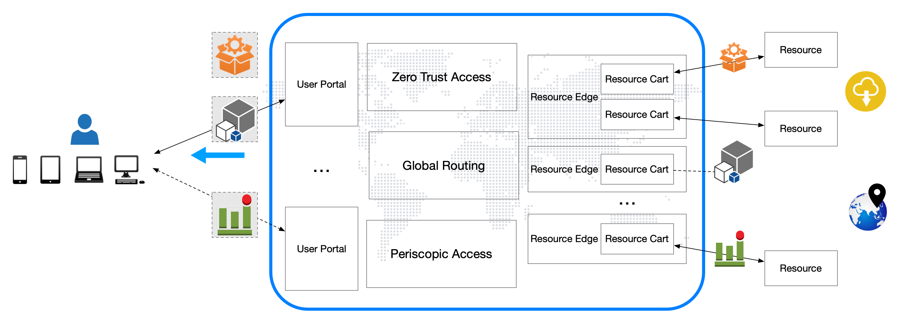

In the evolving landscape of resource access management, businesses are increasingly recognizing the limitations of traditional access models and are adopting more sophisticated strategies. One such strategy is the shift from the "get user in" model, which focuses on securely bringing users in to aceess resources, to the "send resource out" model, which emphasizes delivering resources to users in a controlled and secure manner. Here we are going to explore this paradigm shift and introduce Resource Projection, an innovative approach for the "send resource out" model.
Historically, organizations have relied on proxies and gateways to manage access to resources following the “get user in” model. This traditional approach, centered around creating a secure perimeter and managing access through controlled points, primarily focuses on ensuring that users are secure when they access resources, and is increasingly facing significant challenges.
Rather than connecting users directly to target resources, the "send resource out" model focuses on securely delivering the resources to the users, and Resource Projection represents a transformative approach for resource access management.

By streaming only the graphical or textual user interface of resources, Resource Projection offers a sophisticated solution for accessing digital assets without a direct connection. Resource Projection normalizes resources of different types and enables seamless interaction, ensuring both efficiency and security, and offers several compelling advantages:
Resource Projection provides a standardized user interface across different resource types, enhancing user experience and reducing training and support costs.
Unlike the traditional “get user in” model that might require users to navigate complex VPNs or remote desktop environments, Resource Projection allows for a real-time, interactive experience streamed directly to the user’s device. This method minimizes latency and maximizes efficiency without compromising data security.
By isolating users from direct access to target resources, Resource Projection significantly reduces the risk of cyber threats. A user realizes interaction only on the projection of a resource’s user interface and can never directly access the raw data, effectively reducing the potential attack vectors and fundmentally improving data security.
Administrators can enforce security policies and controls remotely, ensuring that all interactions comply with organizational standards without impacting the endpoint's integrity. This is particularly valuable in environments where endpoint security cannot be guaranteed.
Every interaction through Resource Projection is logged and can be audited, providing a transparent and accountable method for monitoring user activities. This is crucial for compliance with stringent data protection regulations and for conducting detailed forensic investigations.
The strategic evolution from "get user in" to "send resource out" with Resource Projection is more than a trend—it represents a fundamental shift in how organizations manage and secure access to digital assets. By reducing the attack surface, simplifying user access, and enhancing security, Resource Projection offers a visionary solution that addresses the inherent weaknesses of traditional “get user in” model. As digital landscapes become increasingly complex and security becomes more paramount, embracing such innovative access strategies will be crucial for organizations striving to protect their resources while maintaining operational agility and compliance.
Periscopic Access builds on the foundation of Resource Projection to enable seamless access to resources that are otherwise unreachable, and enhances security while simplifying interactions with resources located across various networks or in different geographical locations.

Periscopic Access orchestrates user interaction with resources by three distinct stages and in a periscopic manner. This unique method allows users to engage with resources without requiring specific details like the resource type or address, facilitating a broader and more flexible access strategy.
Periscopic Access shield resources against unauthorized access and data collection, and adds an additional security layer to mitigate various cyber threats. This robust protection is crucial for maintaining the integrity and confidentiality of data across distributed systems.
The technology facilitates the creation of a service mesh characterized by unparalleled scalability, flexibility, and reliability. This is particularly advantageous for organizations utilizing distributed environments, enhancing their operational capabilities.
Periscopic Access revolutionizes remote access by integrating high levels of security and user-friendly interfaces. This new approach not only normalizes access to legacy on-prem resources for all users but also extends the potential of cloud computing to the client side.
Periscopic Access redefines the landscape of remote resource access, offering unmatched security and ease of use. It is an essential technology for organizations looking to leverage cloud computing while ensuring robust security and seamless user experience.
Distributed Access Orchestration (DAO) is an advanced framework designed to enhance access management across distributed systems. By integrating cutting-edge technology with robust security practices, DAO offers a comprehensive solution tailored for managing policies, users, and resources in complex, multi-location environments.
DAO dynamically enforces access control policies, adapting in real-time to changes in user roles, contexts, and security requirements. This ensures that access permissions are always aligned with current policies and that sensitive data remains protected against unauthorized access.
By decoupling the data plane from the control plane, DAO provides unmatched flexibility and scalability. This separation allows for increased autonomy that each component can be managed and scaled independently, enhancing system responsiveness and efficiency, and enhanced security that the risk of data breaches is minimized by limiting the exposure of the control plane.
DAO is engineered to support a geographically dispersed user base, enabling secure and efficient access to resources across multiple networks and locations. This global reach does not compromise on compliance, as DAO can be configured to adhere to local data protection regulations and standards.
Administrators benefit from DAO’s granular control over permissions, which facilitates detailed and precise access management. This capability is crucial for implementing the principle of Separation of Duties (SoD), a key security practice that prevents conflict of interest by distributing critical tasks and privileges among multiple users.
DAO optimizes data flow across different points in the network, ensuring that users experience seamless access to resources with minimal latency and maximum bandwidth. This efficiency is critical in environments where real-time data access and processing are paramount.
By implementing DAO, organizations can achieve a higher level of operational efficiency and security, making it an indispensable tool for modern access management in distributed environments.
Dynamic Access Control (DAC) is engineered to offer a robust solution for managing and safeguarding access to critical resources.
At the heart of DAC is a sophisticated attribute-based access control (ABAC) framework. This allows organization to define precise access policies that are as dynamic as business environment. By leveraging real-time data on user attributes, resource characteristics, and environmental conditions, DAC ensures that access permissions are both accurate and contextually relevant.
By using dynamic policies that adapt to real-time conditions, DAC significantly mitigates the risk of unauthorized access, ensuring that only the right people have the right access at the right time.
Changes in roles, projects, or security statuses are immediately reflected in access permissions, allowing organizations to swiftly adapt to new business or security requirements.
With DAC, administrators can implement finely-tuned access policies based on a comprehensive set of user and resource attributes, enhancing both flexibility and security.
Whether managing access for a small team or a large enterprise, DAC scales effortlessly to meet business needs, protecting against security threats across a diverse array of resources.
Dynamic Access Control is not just a tool—it’s a strategic asset that protects information and facilitates a secure, efficient operational environment. Embrace the future of access management and ensure organizations remain agile and secure in the face of new challenges.
Cloud-Native Edge Service (CNES) redefines the possibilities of edge computing, leveraging the latest in cloud-native technologies to deliver a powerful, distributed cloud infrastructure that is both scalable and resilient.
CNES integrates cutting-edge solutions like containers and service meshes, which not only enhance operational efficiencies but also ensure that services are always available, no matter the demand. By decentralizing the computing resources while maintaining centralized management, CNES provides a seamless balance between control and agility.

With CNES, organization benefits from a robust framework that supports distributed deployment. This means that as business grows, infrastructure seamlessly scales up without sacrificing performance or security.
Adapt service delivery in real-time to meet changing business needs. Whether scaling infrastructure up or down, CNES responds dynamically, allowing for optimal resource utilization and cost efficiency.
CNES empowers systems to deliver services not just on-premises but across multiple clouds and vendors. Whether an organization need a minimal deployment on a single server or a more complex setup across various virtual machines, CNES adapts to specific business requirements.
Break free from vendor lock-in with a solution that offers the flexibility to choose between different cloud providers and hardware vendors, ensuring the best fit for business needs and budget.
Cloud-Native Edge Service is more than just technology; it’s a strategic enabler that allows business to operate with greater efficiency and agility. By adopting CNES, organizations are positioned at the forefront of innovation, ready to meet the challenges of tomorrow with confidence.
Instant Application, pioneering client-side Cloud Computing and most efficient and productive when along with other patented technologies in Resource Edge, marks a transformative step in how organizations deploy and manage software, applications, and virtual desktops. This innovative technology streamlines the provisioning of digital tools and utilities, ensuring that they are more accessible, manageable, and secure than ever before.
At the core of Instant Application is the ability to serve resources through on-demand instances. Whenever a user needs to access an application, Instant Application swiftly creates a new instance from a template, complete with the necessary settings for immediate use. Once the session ends, the instance can either be terminated to free up resources or kept alive for future access, offering unmatched flexibility in resource management.
Users can initiate application instances instantly, which are generated from a pre-configured template with all necessary settings. This instant provisioning typifies the agility of client-side cloud computing.
By creating and terminating resources based on user demand directly at the client level, Instant Application ensures that computing power is allocated efficiently, reducing wasted capacity and enhancing performance.
Incorporating a persistent storage subsystem allows for continuity between sessions. Users can pick up exactly where they left off, retrieving their personalized settings and previous context, which is a significant advantage in client-side cloud environments.
Instant Application’s client-side model supports a broad range of devices, enabling users to access their applications from anywhere, on any device. This flexibility is crucial for supporting a diverse and increasingly remote workforce.
Freed from the complexities of traditional software management, administrators benefit from a reduced burden regarding installations, updates, and license management, thanks to instant provisioning of client-side cloud computing.
The isolated, immutable environments prevent persistent threats and unauthorized data access, significantly enhancing security at the client level. This separation of application and data is vital in protecting against a wide spectrum of cyber threats.
By leveraging the capabilities of client-side cloud computing, Instant Application not only streamlines the management and deployment of IT resources but also significantly enhances security and user satisfaction. Organizations can achieve greater agility, reduced IT overhead, and a secure, scalable environment that supports the dynamic needs of modern workforces.
Dynamic Secure Tunneling (DST) offers a robust and streamlined solution for seamlessly extending cloud capabilities to on-premises assets. By prioritizing security and ease of deployment, DST is designed to facilitate a secure, efficient bridge between cloud environments and on-prem resources, enhancing cloudification strategy for organizations of any size.
DST significantly boosts the security posture of an organization by initiating secure tunnels from the on-premises side only upon receiving valid requests. This approach ensures that secure connections are established without the need to expose public IP addresses or open unnecessary ports. By doing so, DST effectively minimizes the risk of exposing on-prem assets to potential external threats, safeguarding sensitive data and systems.
DST's unique method of establishing secure tunnels ensures that only authorized data exchanges occur, greatly reducing the risk of intrusions and data breaches.
Whether to connect to a single on-prem resource or access an entire local network, DST provides the flexibility to cover all bases. This adaptability makes it an ideal choice for businesses with complex or evolving infrastructure needs.
DST is praised for its straightforward setup and minimal impact on existing infrastructure. Organizations can deploy DST with minimal effort, avoiding any disruption to ongoing operations.
DST facilitates a smooth and secure transition of on-prem assets to cloud-based environments, enabling businesses to leverage the benefits of cloud computing without compromising on security.
Dynamic Secure Tunneling not only simplifies the integration of cloud and on-premises resources but also fortifies the security framework of the entire network. Embrace DST to ensure a seamless, secure, and efficient cloud adoption journey, empowering businesses to thrive in a digitally transformed ecosystem.
Containerized Virtual Machine (CVM) represents a groundbreaking fusion of container flexibility with the robust isolation provided by traditional virtual machines (VMs). This innovative approach not only enhances the operational efficiency and scalability of legacy systems but also integrates seamlessly with modern cloud-native technologies, providing a versatile platform for hosting resources across multiple environments.
By encapsulating each VM within a container, CVM offers a unique solution that transforms traditional virtual infrastructure. This integration enables businesses to leverage the rapid provisioning and lightweight nature of containers while maintaining the full isolation benefits of VMs. The result is a dynamic, efficient, and scalable infrastructure that supports full compatibility and seamless operation across diverse platforms.
CVM combines the best of both container and VM，to deliver unparalleled flexibility in resource management and scaling capabilities. This makes it ideal for businesses looking to adapt quickly to changing demands.
The additional layer of isolation provided by CVM shields VMs from direct exposure to potential threats, enhancing the overall security posture without the complexity of endpoint security agents within VM instances.
For organizations with existing VM-based infrastructure, CVM facilitates a smooth transition to cloud technologies. It allows legacy systems to coexist with and benefit from cloud-native innovations without requiring a complete overhaul.
CVM ensures that virtualized resources can be hosted on multiple platforms simultaneously, offering greater operational flexibility and efficiency.
Containerized Virtual Machine is the ideal solution for organizations seeking to modernize their IT infrastructure while preserving the integrity and security of their legacy systems. By adopting CVM, businesses can enjoy the benefits of modern cloud-native technologies without sacrificing the control and isolation that traditional VMs provide.